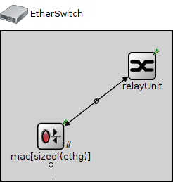
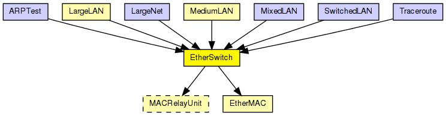
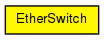

Model of an Ethernet switch.
The duplexChannel attributes of the MACs must be set according to the medium connected to the port; if collisions are possible (it's a bus or hub) it must be set to false, otherwise it can be set to true.
This model does not contain the spanning tree algorithm.
The following diagram shows usage relationships between types. Unresolved types are missing from the diagram.
The following diagram shows inheritance relationships for this type. Unresolved types are missing from the diagram.
| Name | Type | Description |
|---|---|---|
| LargeLAN | compound module |
Several hosts and an Ethernet hub on a switch. One port of the hub connect to a 10Base2 segment. |
| MediumLAN | compound module |
Several hosts and an Ethernet hub on a switch |
| Name | Type | Description |
|---|---|---|
| ARPTest | network | (no description) |
| LargeNet | network |
A large Ethernet LAN -- see model description here. |
| MixedLAN | network |
Sample Ethernet LAN containing eight hosts, a switch and a bus. |
| SwitchedLAN | network |
Sample Ethernet LAN: four hosts connected to a switch. |
| Traceroute | network | (no description) |
| Name | Type | Default value | Description |
|---|---|---|---|
| relayUnitType | string | "MACRelayUnitNP" |
type of the MACRelayUnit; currently possible values are MACRelayUnitNP and MACRelayUnitPP |
| Name | Value | Description |
|---|---|---|
| node | ||
| labels | node | |
| display | i=device/switch |
| Name | Direction | Size | Description |
|---|---|---|---|
| ethg [ ] | inout |
| Name | Type | Default value | Description |
|---|---|---|---|
| relayUnit.addressTableFile | string |
set to empty string if not used |
|
| relayUnit.addressTableSize | int |
max size of address table |
|
| relayUnit.agingTime | double |
max idle time for address table entries (when it expires, entry is removed from the table) |
|
| mac.address | string | "auto" |
MAC address as hex string (12 hex digits), or "auto". "auto" values will be replaced by a generated MAC address in init stage 0. |
| mac.txrate | double | 100Mbps |
maximum data rate supported by this station (bit/s); actually chosen speed may be lower due to auto- configuration. 0 means fully auto-configured. |
| mac.duplexEnabled | bool | true |
whether duplex mode can be enabled or not; whether MAC will actually use duplex mode depends on the result of the auto-configuration process (duplex is only possible with DTE-to-DTE connection). |
| mac.txQueueLimit | int | 1000 |
maximum number of frames queued up for transmission; additional frames are dropped. Only used if queueModule=="" |
| mac.mtu | int | 1500 |
// // Model of an Ethernet switch. // // The duplexChannel attributes of the MACs must be set according to the // medium connected to the port; if collisions are possible (it's a bus or hub) // it must be set to false, otherwise it can be set to true. // // This model does not contain the spanning tree algorithm. // module EtherSwitch { parameters: @node(); @labels(node,ethernet-node); @display("i=device/switch"); string relayUnitType = default("MACRelayUnitNP"); // type of the MACRelayUnit; currently possible // values are MACRelayUnitNP and MACRelayUnitPP gates: inout ethg[] @labels(EtherFrame-conn); submodules: relayUnit: <relayUnitType> like MACRelayUnit { parameters: @display("p=200,50"); gates: lowerLayerIn[sizeof(ethg)]; lowerLayerOut[sizeof(ethg)]; } mac[sizeof(ethg)]: EtherMAC { parameters: promiscuous = true; queueModule = ""; @display("p=70,150,row;q=queue"); } connections: for i=0..sizeof(ethg)-1 { mac[i].upperLayerIn <-- relayUnit.lowerLayerOut[i]; mac[i].upperLayerOut --> relayUnit.lowerLayerIn[i]; mac[i].phys <--> ethg[i]; } }